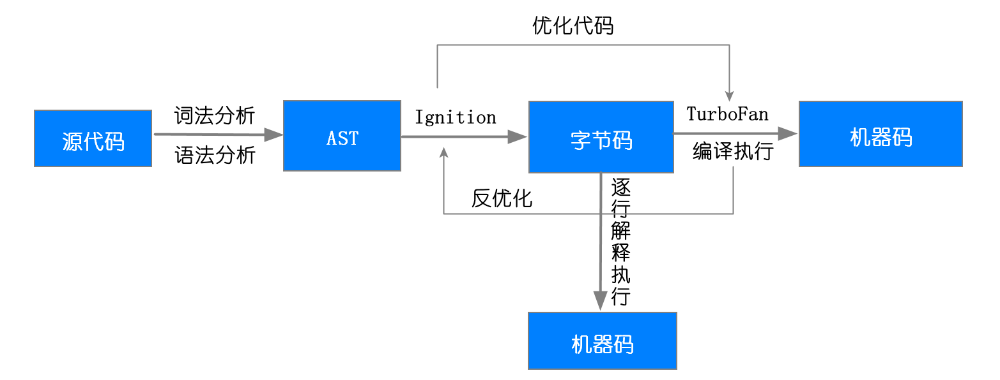
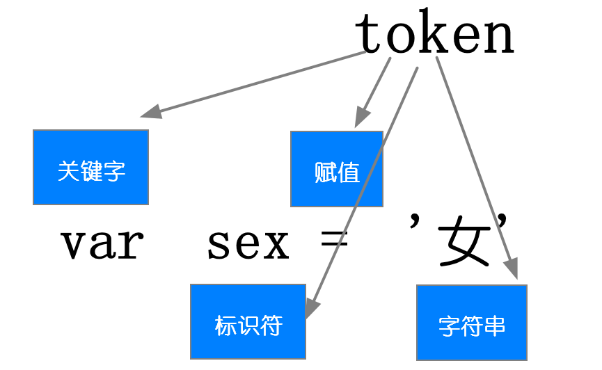
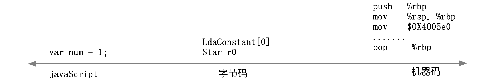

1. 第一步 生成AST语法树
第一阶段是分词（tokenize），又称为词法分析，其作用是将一行行的源码拆解成一个个 token。所谓 token，指的是语法上不可能再分的、最小的单个字符或字符串。你可以参考下图来更好地理解什么 token。
第二阶段是解析（parse），又称为语法分析，其作用是将上一步生成的 token 数据，根据语法规则转为 AST。如果源码符合语法规则，这一步就会顺利完成。但如果源码存在语法错误，这一步就会终止，并抛出一个“语法错误”。这就是 AST 的生成过程，先分词，再解析。

2. 第二步 生成字节码
有了 AST 和执行上下文后，那接下来的第二步，解释器 Ignition 就登场了，它会根据 AST 生成字节码，并解释执行字节码。
字节码就是介于 AST 和机器码之间的一种代码。但是与特定类型的机器码无关，字节码需要通过解释器将其转换为机器码后才能执行。
在 V8 中，字节码有三个作用：
第一个是解释器可以直接解释执行字节码 ;
第二个是优化编译器可以将字节码编译为二进制代码，然后再执行二进制机器代码。
第三个是字节码是平台无关的，机器码针对不同的平台都是不一样的

3.第三步 执行代码
生成字节码之后，接下来就要进入执行阶段，如果有一段第一次执行的字节码，解释器 Ignition 会逐条解释执行
解释器 Ignition（点火）作用
- 负责生成字节码之外
- 解释执行字节码
注意：
在 Ignition 执行字节码的过程中，如果发现有热点代码（HotSpot），比如一段代码被重复执行多次，这种就称为热点代码，那么后台的编译器 TurboFan（涡轮发动机） 就会把该段热点的字节码编译为高效的机器码，然后当再次执行这段被优化的代码时，只需要执行编译后的机器码就可以了，这样就大大提升了代码的执行效率